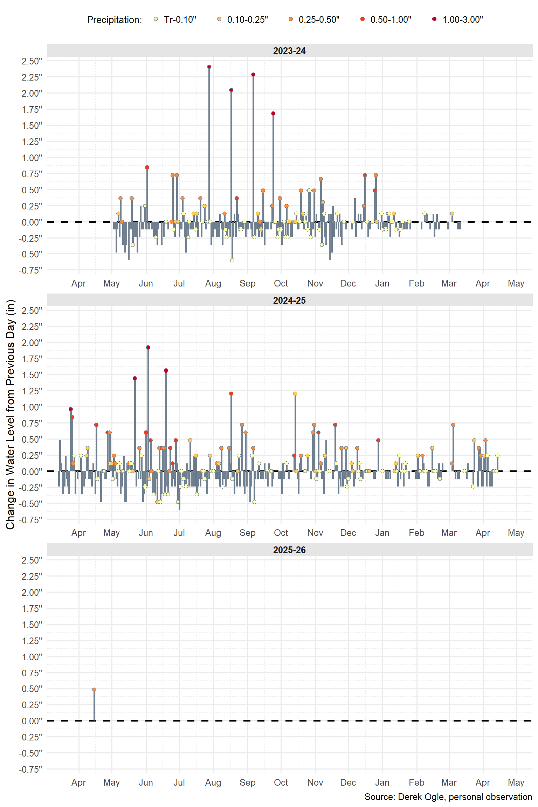

The winter of 2022-23 was exceptionally snowy in northern Wisconsin (see this). Landowners around the Pike Lake Chain expressed concerns about high water levels on the lakes soon after ice-out that year as “beaches” and docks were under water. A relative depth gauge is affixed to a permanent “wall” a few feet upstream from the dam on Flynn Lake (i.e., the outlet of the Pike Lake Chain). With the help of some friends (see Acknowledgments below), I now have near daily water level measurements at the gauge from May 2, 2023 to March 29, 2025. I hope these data will help us better understand both typical and atypical water levels on the lakes. My analysis and interpretation of these data are below. More information about the data collection is further below.
Water Level
The graph below shows the daily water level at the gauge for each ice-out to ice-out season, with the current season (with on-going data collection) shown at the top. Additionally, points color coded by the amount of precipitation are shown for days where precipitation occurred (no point is shown for days without precipitation).

Without historical data it is difficult to state that the water level at the beginning of 2022-23 was atypically high. However, it was nearly 5” higher than the water level at ice-out in 2023-24 and was at least 3” higher than any other water level recorded in 2022-23 after the initial peak had subsided. Furthermore, the water level dropped rather quickly in spring of 2023 suggesting that there was excess water in the system that simply needed time to be flushed out.
From 2022-23, it appears that, without any additional precipitation, lake water levels drop about 1/8” to 1/4” per day until a baseline level between 21” and 22” is approached. Near that baseline the drop in lake water level tends to be less. Lake water levels can increase substantially with precipitation but the actual rise does not always match the amount of precipitation, sometimes being more and sometimes being less than the precipitation amount.
Change in Water Level
The graph below is the same data as that shown in the graph above but it is displayed as a change in lake water level from the previous day. This presentation makes it easier to see how much water levels change daily.

The greatest daily change in water level was an increase of 2.4 on July 27, 2023 following 1.16” of rain. Interestingly lower daily water level increases were observed following greater amounts of rain on other dates.
Summary Table
The following table summarizes, for each season, the starting and ending dates for the season; the lake water level at the start and end of the season; the median, lowest 10%, lowest 90% (i.e., 10% higher), minimum, maximum, and range of lake water levels; and the maximum daily drop and rise in lake water levels.
| Season |
Date
|
Water Level
|
Max Change
|
|||||||||
|---|---|---|---|---|---|---|---|---|---|---|---|---|
| Start | End | Start | End | Median | 10% | 90% | Min | Max | Range | Drop | Rise | |
| 2024-25 | Feb 2 | Mar 29 | 21.6 | 23.8 | 22.6 | 21.5 | 23.8 | 20.3 | 25.7 | 5.4 | 0.96 | 1.92 |
| 2023-24 | May 2 | Mar 13 | 28.1 | 21.8 | 22.9 | 22.1 | 24.4 | 21.6 | 28.1 | 6.5 | 0.60 | 2.40 |
| Overall | — | — | — | — | 22.7 | 21.7 | 24.0 | 20.3 | 28.1 | 7.8 | 0.96 | 2.40 |
Data Collection
Data collection is pretty straightforward for this project. I, or a friend, record the water level at the gauge to the nearest 0.01’ each day (as possible) as close to noon as possible. On the few days where we could not make the reading, I linearly interpolated the water level from the two adjacent readings. Surprisingly, it is harder to read the gauge then you would imagine. On a few days, we had multiple people read the gauge and from this I expect the “human error” of the readings to be about 0.01’.
The lake water level readings should be considered as “relative” values as it is not clear to me what the gauge is measuring from. In other words, a reading of 21” is not meaningful in and of itself (i.e. 21” from what?), but it does have meaning relative to another measurement of, say, 24” (i.e., it is 3” lower).
Precipitation measurements are from my data recorded for the CoCoRaHS Network at a location near the shore of Eagle Lake, the next lake upstream from Flynn Lake. Snow was converted to a “snow water equivalent” (SWE) to most closely compare with rain. Ice out was for Eagle Lake as recorded by Gary Hagstrom (see this).
Acknowledgments
Thanks to Hal A, Ieuan A, Joe R., Kevin S., Sjana S, and Tim T. for taking the measurements when I could not!!